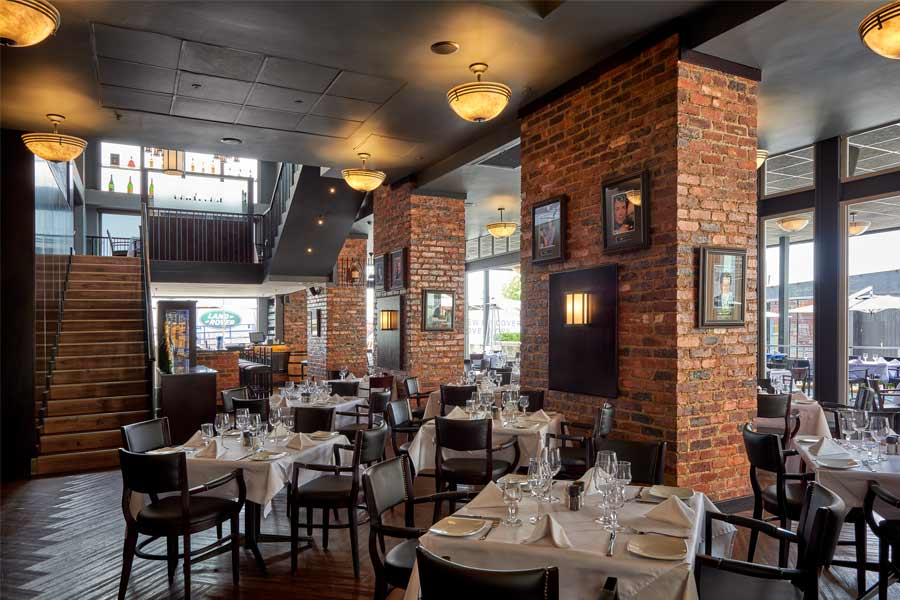
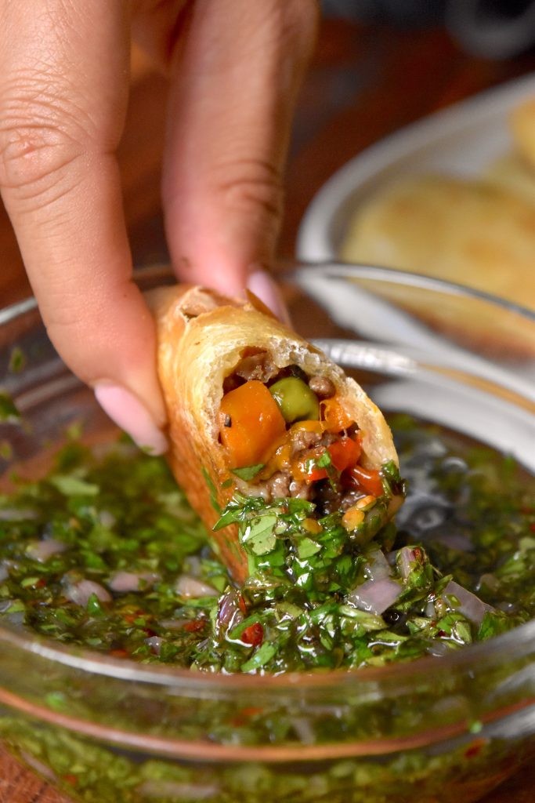
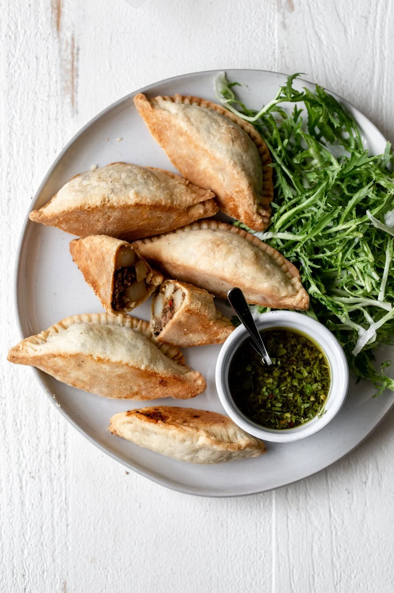
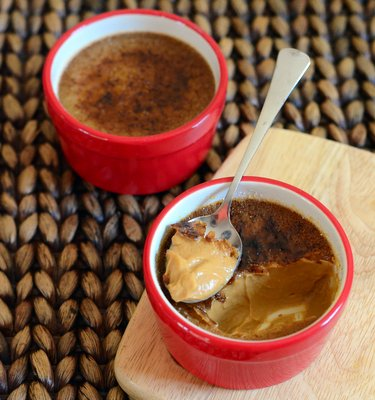

The Butcher Boys Cape Town, South Africa


Starter: Beef empanadas with chimichurri dip
The empanadas arrived golden and flaky, with a juicy, well-seasoned beef filling. The chimichurri was fresh and zesty, and its garlic and parsley cut through the richness perfectly. It was a great start that set the tone for the meal.


Main: 300 g ribeye steak with hand-cut chips and grilled vegetables, paired with Malbec
This is what I came for, and it didn’t disappoint. The ribeye was cooked to a perfect medium-rare, with a smoky, charred crust and a tender, buttery centre. The hand-cut chips were crispy outside and fluffy inside, and the grilled vegetables added a fresh, colourful balance. A glass of bold Malbec was the ideal partner: its dark-berry flavours stood up beautifully to the rich, smoky steak.
Dessert: Dulce de leche crème brûlée
The caramelised sugar top cracked perfectly under my spoon, revealing a silky, smooth custard beneath. The dulce de leche gave it a deep, toffee-like sweetness that wasn’t too heavy after such a big meal. It was the perfect ending.
